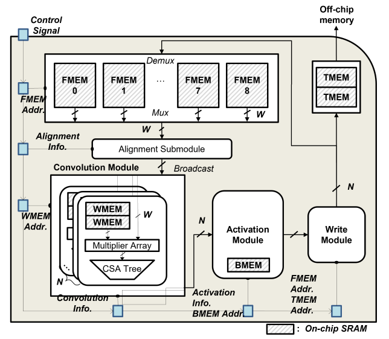

MIDAP
A Full-Stack Open NPU Platform for Embedded AI Exploration
MIDAP (Memory In the Datapath Architecture Processor) is a high-performance, adder-tree based CNN accelerator.
Architecture
It is engineered to maximize throughput-per-watt by minimizing DRAM access overhead.
Integrated SRAM
Dedicated memory within the datapath for ultra-low latency.
Multi-bank FMEM
Efficient inter-layer data reuse.
Fused Architecture
Unified pipeline for convolution, activation, and reduction.

Full-stack flow
A single quantized ONNX model runs end to end, compiled to Fused IR, L1 and L2 instructions, then to hardware microcode, and executed at every level. Hover, tap or focus any box to highlight its inputs and outputs and read what it does.
Compiler
- In: Quantized ONNX (→ TOSA)
- Passes: op-fuse → tile → memory-compile → L1-to-L2 lowering
- Out: L1 IR (tile-level, bank-aware), L2 IR (
config/run/wait)
Simulator
- Accuracy: cycle-accurate, end-to-end latency including DRAM overhead
- Levels: high-level (performance & bottlenecks) + low-level (runs microcode)
- Tracing: Perfetto-compatible export for DMA and core-stall analysis
RTL
- FPGA-oriented SoC with an IBEX RISC-V control core
- Bus interfaces: AXI (DRAM model) + APB
- Verify: RTL simulation
Validated on a Xilinx KCU1500; the RTL is not tied to any specific board or simulator.
Performance
Measured results, grouped by measurement environment. Each group runs at its own clock frequency; figures are not comparable across groups.
Util. (%) = Effective TOPS ÷ Peak TOPS, where Peak TOPS = 2 × 1,024 MACs × clock
Cycle-accurate virtual prototype
1,024 MACs @ 1 GHz · 1.5 MB on-chip SRAM · peak 2.05 TOPS
| Network | Task | Input | Latency (ms) | Util. (%) |
|---|---|---|---|---|
| ResNet-50 | Classification | 224×224 | 5.75 | 69.5 |
| ResNet-50 | Classification | 299×299 | 9.65 | 77.2 |
| Inception V3 | Classification | 299×299 | 8.05 | 69.3 |
| Inception V3 | Classification | 346×346 | 10.0 | 71.5 |
| MobileNet V2 | Classification | 224×224 | 1.19 | 24.6 |
| MobileNet V3-Large | Classification | 224×224 | 1.28 | 16.7 |
| MobileNet V3-Large | Classification | 512×512 | 6.93 | 15.9 |
| MobileNet V3-Large (min) | Classification | 224×224 | 1.07 | 19.3 |
| MobileNet V3-Large (min) | Classification | 512×512 | 6.27 | 17.1 |
| EfficientNet-b0 | Classification | 224×224 | 1.67 | 22.6 |
| MobileNet v1-SSD | Detection | 224×224 | 1.32 | 50.7 |
| MobileNet v1-SSD | Detection | 300×300 | 2.23 | 55.6 |
| U-Net | Segmentation | 128×128 | 12.7 | 87.1 |
GEMM input preprocessing and Softmax are excluded from the measurement scope.
Source: D. Kang, Ph.D. thesis, Seoul National University, Table 7.1 (ICCD 2019 / DSD 2022 line)
ASIC post-layout (post-netlist + SDF)
Samsung 14 nm · 1,024 MACs @ 534 MHz · 0.8 V · LPDDR4-4266 · peak 1.09 TOPS
| Network | Task | Input | Latency (ms) | Util. (%) | Power (W) | TOPS/W |
|---|---|---|---|---|---|---|
| YOLOv4-tiny | Detection | 416×416† | 12.66 | 70.6 | 0.425 | 1.81 |
| DeepLabV3+ | Segmentation | 320×320†‡ | 27.79 | 67.8 | 0.404 | 1.83 |
| EfficientNet-b2 | Classification | 260×260† | 11.13 | 13.8 | 0.225 | 0.67 |
Silicon-ready implementation; 2.608 mm² die area, 66.7% of which is SRAM.
† The first convolution layer is assumed to be handled by a separate convolution engine in the ISP and is excluded (~3% of total latency). MIDAP input tensors are 208×208×32 (YOLOv4-tiny), 160×160×64 (DeepLabV3+), and 130×130×64 (EfficientNet-b2).
‡ The final upsampling layer is assumed to run on the host CPU.
Source: MIDAP post-layout power/timing analysis; UDDAC 2026 DAC poster
Virtual prototype + FP16 SIMD extension
Transformer workloads · 1,024 MACs · 25.6 GB/s DRAM
| Network | Task | Input | Latency (ms) | Util. (%) |
|---|---|---|---|---|
| ViT-Base | Vision Transformer | 224×224, 12 encoders @ 1 GHz | 21.60 | 79.0 |
| Gemma2-2b | LM, prefill (256 tok) | @ 500 MHz | 1127.71 | 96.5 |
| Gemma2-2b | LM, generation (KV 256) | @ 500 MHz | 143.33 | 3.6 |
ViT-Base offloads Softmax and LayerNorm to a Jetson AGX GPU with multi-head scheduling applied. Gemma2-2b runs RMSNorm and Softmax on a 16-lane FP16 SIMD unit.
Source: ICCD 2024, Table VII (ViT); ICCAD 2025, Table IV (Gemma2-2b)
Notes
- Util. = Effective TOPS ÷ Peak TOPS, where Peak TOPS = 2 × 1,024 MACs × clock. TOPS/W = Effective TOPS ÷ average power — an effective-rate figure, not peak.
- Latency and power are reported at each group's own clock frequency. Rows from different groups are not directly comparable.
- Gemma2-2b generation shows low utilization because the stage is memory-bound; lowering the clock to 100 MHz costs under 1% in latency.
BibTeX
@inproceedings{midap2026,
title = {MIDAP: A Full-Stack Open NPU Platform for Embedded AI Exploration},
author = {Changjae Yi and Hyunsu Moh and Seongwoo Choi and Joon Choi and Youngchul Yoon and Soonhoi Ha},
booktitle = {Design Automation Conference (DAC), University Demonstration},
year = {2026},
note = {CAP Lab, Seoul National University}
}Acknowledgements & Updates
MIDAP is being developed by the CAP Lab at Seoul National University, led by Prof. Soonhoi Ha. It builds on prior work on fully pipelined CNN acceleration and tensor virtualization (see the Papers menu).
A public release of the MIDAP platform is planned for H1 2027.
Contact
CAP Lab, Department of Computer Engineering, Seoul National University
Email: cap@iris.snu.ac.kr
Homepage: peace.snu.ac.kr